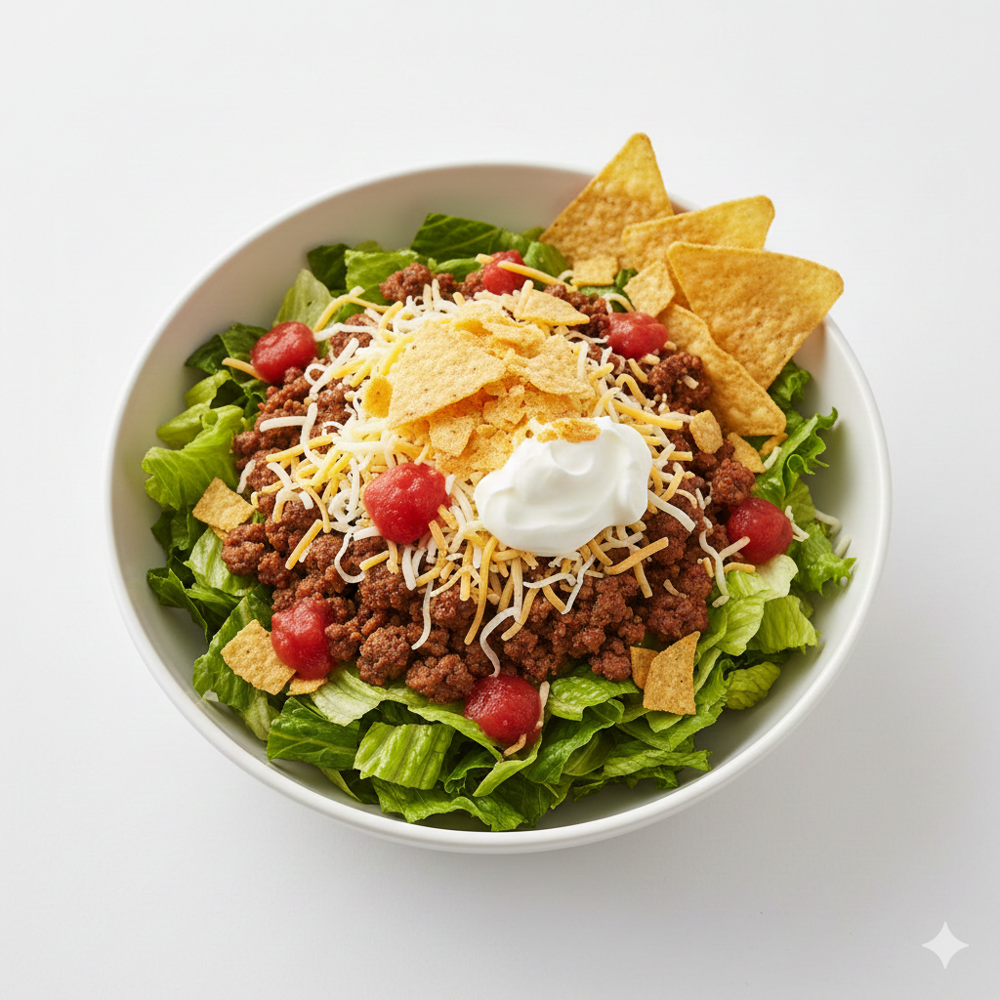

This recipe focuses on simplicity and speed, using pre-cooked components to make it an easy weeknight meal.
Ingredient List
- 1 pound (approx. 450g) lean ground beef (or ground turkey/plant-based crumbles)
- 1 packet (approx. 1 oz / 28g) taco seasoning mix
- 1 head of romaine lettuce, washed and chopped
- 1 cup shredded cheddar or Monterey Jack cheese
- 1 cup crushed tortilla chips (or a few handfuls of whole chips)
- 1/2 cup salsa (your favorite kind)
- 1/2 cup sour cream (or Greek yogurt, optional for topping)
Instructions
- Brown the Meat:In a large skillet, cook the ground beef (or your choice of meat) over medium heat until it is fully browned. Drain off any excess fat.
- Season the Meat:Stir in the taco seasoning mix and 2/3 cup of water. Bring the mixture to a simmer, then reduce the heat and cook for 5-7 minutes, or until the liquid has mostly absorbed, stirring occasionally. Set aside to cool slightly.
- Prepare the Base:In a large bowl, combine the chopped romaine lettuce to create the salad base.
- Assemble the Salad:Add the cooled, seasoned taco meat over the lettuce. Top with the shredded cheese and the salsa.
- Add the Crunch:Just before serving, sprinkle the crushed tortilla chips over the top of the salad for that essential taco shell crunch.
- Serve and Finish:Divide the salad into individual bowls. Dollop each serving with a spoonful of sour cream (if using) and serve immediately.